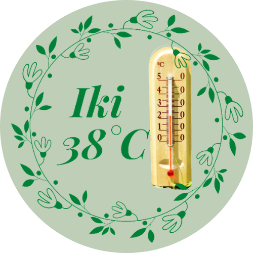
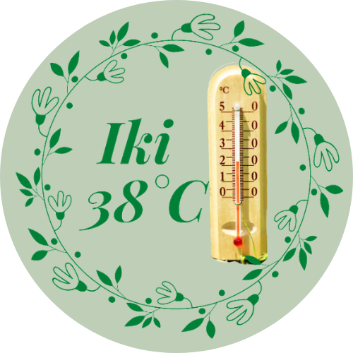

Gamtos galia kiekvienoje granuleje!
Leiskite sau nustebti ir susižavėti, kaip vertingas „Olymp“ veikia Jūsų augintinį.
Sudėtis:
jautiena, paukštiena ir silkės džiovinta mėsa 43%, viso grūdo ryžiai, kukurūzai, žolelių kompleksas, lašišos aliejus, menkių kepenų aliejus 2%, pankolio sėklos, dumbliai.
Lašišos ir menkių kepenų aliejai suteikia šuniui daug vitaminų ir užtikrina, kad galime apsieiti be kitų maistinių priedų.
Analitiniai komponentai:
Žali baltymai 24,50%
žali riebalai 10,00%
žaliaviniai pluoštai 2,50%
pelenai 6,50%
drėgmė 8,00%
Kalcis l, • 10%
Pfosforas 0,80%
Gamintojas:
Reico & Partner Vertriebs GmbH, Vokietija
30 metų vertngos patirties turinti įmonė,
Kurios tiklas yra išsaugoti ir perteikti gamtos galią, iužtikrinant mineralų balansą
Gpakuočių dydžiai / prekės kataloge Nr.: 3 kg / 1088 aš 10 kg / 1081 aš 20 kg / 1080